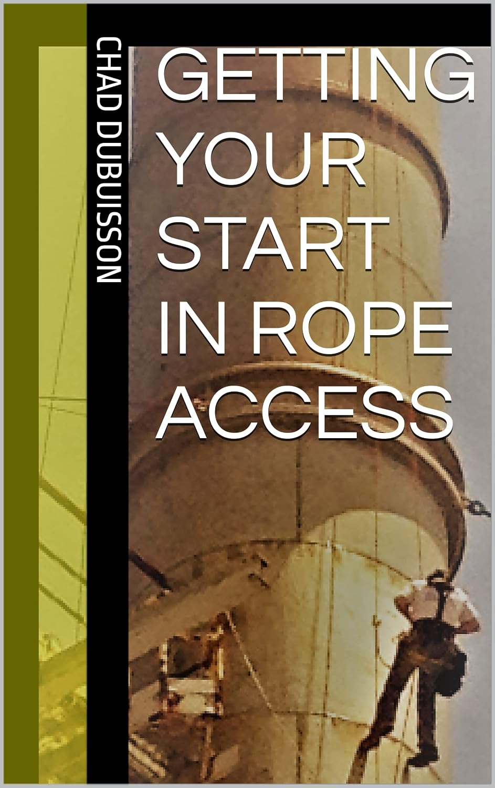

Training requirements, costs, direct entry, finding work, and what the early steps tend to look like.

Standalone book by Chad Dubuisson
Getting Your Start in Rope Access
A direct career guide for people deciding whether rope access is worth the training, money, travel, weather, physical work, and first-job grind.
What it covers
A rope-access reality check before you buy the course.
The book is written for people on the fence: curious about the trade, attracted to the work, but trying to understand the path before committing.
Physical demands, travel, difficult conditions, first jobs, and the less-glamorous parts of the industry.
Pros, cons, pitfalls, and plain advice for deciding whether rope access is actually a good fit.
Separate from the app
The book is its own thing.
Rope Access Logbook is the app for keeping work records once you are logging hours. This book is a separate resource for people deciding whether they should enter the rope-access industry at all.